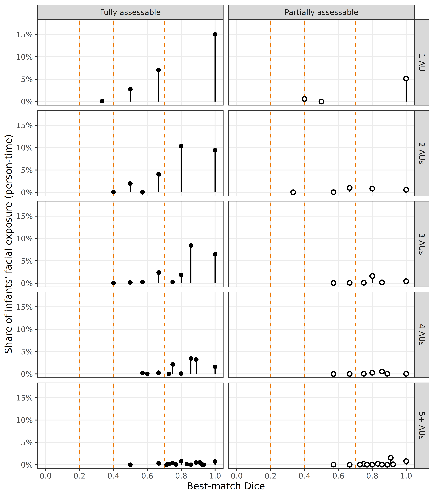

library(tidyverse)
library(furrr)
library(gt)
library(facs)
library(datawizard)Observed Facial Configurations
Approach
Each coded FACS event is one momentary configuration of one face. Recordings can contain multiple faces, coded separately by identity, so configurations from co-visible faces are counted separately and never merged. Exposure is duration-weighted person-time: two faces visible for one second contribute two face-seconds.
Correspondence with hypothesized configurations follows the agreed plan:
- Metric: Dice coefficient (
facs::compare_to_prototypes), the match score of Le Mau et al. Eq. 1. - Unit: one best-match Dice per configuration (max over all hypothesized configurations, agnostic to emotion category). No summarizing within category.
- Bands: Haidt & Keltner cutoffs (none <0.2, weak 0.2-0.4, moderate 0.4-0.7, strong >=0.7), all reported.
- Assessability: hypothesized configurations are reduced to the project scheme. Those retaining no in-scheme AUs are unassessable and excluded from scoring; those losing some AUs are partially assessable and flagged, because matches against them are scored on a fragment of the hypothesis.
- Reported both unweighted (per distinct configuration) and exposure-weighted.
band_breaks <- c(0, 0.2, 0.4, 0.7, 1.0)
band_labels <- c("none (<0.2)", "weak (0.2-0.4)", "moderate (0.4-0.7)", "strong (>=0.7)")
waves_included <- c(6, 9)
core_cutoff <- 0.01 # >=1% of full-face time, for the core tableData
info <-
left_join(
read_rds("/mnt/datasets/SEEDLingS/2_PROCESSED/session_info.rds"),
read_rds("facs_times.rds"),
by = c("subject", "wave")
) |>
filter(!(subject == 18 & wave == 6), wave %in% waves_included) |>
mutate(
valid_session = session_duration - vis - hat,
valid_fullface = ffa - vis - hat # includes neutral full-face time
)
facs <-
read_rds("/mnt/datasets/SEEDLingS/2_PROCESSED/facs_coding.rds") |>
left_join(info, by = c("subject", "wave")) |>
filter(!(subject == 18 & wave == 6), wave %in% waves_included)
project_scheme <- scheme(list(
occurrence = c(1:2, 4:39),
intensity = c(1:2, 4:39),
asymmetry = c(1:2, 4:39)
))
protos <-
prototypes |>
filter(is.na(emotion_type) | emotion_type != "compound") |>
mutate(
emotion = case_when(
emotion %in% c("anger", "angry") ~ "anger",
emotion %in% c("confused", "confusion") ~ "confusion",
emotion %in% c("desire", "desire food", "desire sex") ~ "desire",
emotion %in% c("disgust", "disgusted") ~ "disgust",
emotion %in% c("fear", "fearful") ~ "fear",
emotion %in% c("happy", "happiness", "joy") ~ "happiness",
emotion %in% c("sad", "sadness") ~ "sadness",
emotion %in% c("surprise", "surprised") ~ "surprise",
.default = emotion
)
)
total_session <- sum(info$valid_session, na.rm = TRUE)
total_fullface <- sum(info$valid_fullface, na.rm = TRUE)
n_infants <- n_distinct(info$subject)Assessability of hypothesized configurations
Reports how many hypothesized configurations the coding scheme could evaluate. Needed before any claim that an emotion did or did not occur: an emotion whose configurations are all unassessable cannot appear in the results at all, and its absence would say nothing about infants’ input.
proto_status <-
protos |>
mutate(
name = paste(source, emotion, config_num, sep = "_"),
full_aus = map_int(code, \(x) length(pull_numcodes(x))),
kept_aus = map_int(code, \(x) length(intersect(pull_numcodes(x), project_scheme$occurrence))),
status = case_when(
kept_aus == 0 ~ "unassessable",
kept_aus < full_aus ~ "partial",
.default = "complete"
)
) |>
select(name, emotion, code, status, full_aus, kept_aus)
# SUPPLEMENT TABLE S1: assessability of the hypothesized set
tab_s1 <-
proto_status |>
summarize(.by = status, configs = n(), emotions = n_distinct(emotion)) |>
mutate(pct = configs / sum(configs)) |>
arrange(factor(status, levels = c("complete", "partial", "unassessable")))
tab_s1 |>
gt() |>
tab_header(title = "Table S1. Assessability of hypothesized configurations") |>
fmt_percent(columns = pct, decimals = 1) |>
cols_label(status = "Status", configs = "Configs", emotions = "Emotions",
pct = "% of configs")| Table S1. Assessability of hypothesized configurations | |||
| Status | Configs | Emotions | % of configs |
|---|---|---|---|
| complete | 223 | 12 | 81.4% |
| partial | 46 | 13 | 16.8% |
| unassessable | 5 | 4 | 1.8% |
# Emotions that are ENTIRELY unassessable: these cannot occur by construction.
emotions_lost <-
proto_status |>
summarize(.by = emotion,
all_unassessable = all(status == "unassessable"),
n_configs = n()) |>
filter(all_unassessable)
cat("Emotions with no assessable configuration:",
if (nrow(emotions_lost)) paste(emotions_lost$emotion, collapse = ", ") else "none", "\n")Emotions with no assessable configuration: boredom Build configurations
plan("multisession", workers = 9)
occ_events <-
facs |>
mutate(
occ = future_map_chr(facs_code, \(x) {
codes <- tidy(coding(x))[[1]]$occurrence
paste(codes[codes %in% project_scheme$occurrence], collapse = "+")
}),
occ = na_if(occ, ""),
occ = na_if(occ, "NA")
) |>
drop_na(occ, facs_identity, facs_duration) |>
filter(facs_duration > 0) |>
mutate(occ = coding(occ))
obs_table <-
occ_events |>
summarize(
.by = occ,
n_events = n(),
n_subjects = n_distinct(subject), # infants
n_faces = n_distinct(paste(subject, facs_identity)), # individuals
duration = sum(facs_duration) # person-time
) |>
mutate(
n_aus = str_count(as.character(occ), "\\+") + 1,
session_pct = duration / total_session,
fullface_pct = duration / total_fullface,
pct_events = n_events / sum(n_events),
pct_time = duration / sum(duration) # share of expressive exposure
) |>
arrange(desc(duration))
total_exposure <- sum(obs_table$duration)
cat("Events:", nrow(occ_events),
"| Distinct configurations:", nrow(obs_table),
"| Infants:", n_infants, "\n")Events: 11077 | Distinct configurations: 891 | Infants: 44 Dice match scores
scores <- compare_to_prototypes(
obs_table$occ,
scheme = project_scheme,
proto = protos,
uncoded = "omit",
output = "all"
)Dropped 5 prototype(s) with no in-scheme AUs (unassessable in this scheme):
[cordaro2018_interest_1, cordaro2018_boredom_1, keltner2019_boredom_1,
keltner2019_pride_1, keltner2019_shame_1].obs_table <-
obs_table |>
mutate(
best_dice = map_dbl(scores, \(s) if (length(s)) max(s, na.rm = TRUE) else NA_real_),
best_match = map2_chr(scores, best_dice, \(s, b) {
if (is.na(b) || b == 0) return(NA_character_)
hit <- names(s)[!is.na(s) & s == b]
ems <- unique(str_remove(str_remove(hit, "^[^_]+_"), "_[^_]+$"))
paste(sort(ems), collapse = ", ")
}),
# Is the best score achieved by any FULLY assessable hypothesized config?
best_status = map2_chr(scores, best_dice, \(s, b) {
if (is.na(b) || b == 0) return(NA_character_)
hit <- names(s)[!is.na(s) & s == b]
st <- proto_status$status[match(hit, proto_status$name)]
if (any(st == "complete", na.rm = TRUE)) "complete" else "partial only"
}),
exact = !is.na(best_dice) & best_dice == 1,
band = cut(best_dice, breaks = band_breaks, labels = band_labels,
include.lowest = TRUE, right = FALSE)
)FIGURE: match by configuration size and assessability
fig_match <-
obs_table |>
filter(!is.na(best_dice), !is.na(best_status)) |>
mutate(
complexity = factor(
pmin(n_aus, 5),
levels = 1:5,
labels = c("1 AU", "2 AUs", "3 AUs", "4 AUs", "5+ AUs")
),
best_status = factor(
best_status,
levels = c("complete", "partial only"),
labels = c("Fully assessable", "Partially assessable")
)
) |>
summarize(.by = c(best_dice, complexity, best_status), w = sum(duration)) |>
mutate(p = w / total_exposure) |>
ggplot(aes(x = best_dice, y = p)) +
geom_vline(xintercept = 0.7, linetype = "dashed", color = "darkorange2") +
geom_segment(aes(xend = best_dice, yend = 0), linewidth = 0.6) +
geom_point(aes(shape = best_status), size = 1.8, fill = "white",
show.legend = FALSE, stroke = 1) +
scale_shape_manual(values = c(16, 21)) +
facet_grid(complexity ~ best_status) +
scale_x_continuous(limits = c(0, 1), breaks = seq(0, 1, 0.25)) +
scale_y_continuous(labels = scales::percent) +
coord_cartesian(ylim = c(0, 0.175)) +
labs(x = "Best-match Dice",
y = "Share of infants' facial exposure (person-time)") +
theme_bw() +
theme(panel.grid.minor = element_blank())
fig_match
ggsave("fig_match.png", fig_match, width = 7, height = 8, dpi = 300)MAIN TABLE: core configurations
tab_core <-
obs_table |>
filter(fullface_pct >= core_cutoff) |>
transmute(
occ = as.character(occ), n_aus, n_events, n_subjects, n_faces,
duration, fullface_pct, session_pct, best_dice,
best_match = coalesce(best_match, "\u2014")
)
tail_row <-
obs_table |>
filter(fullface_pct < core_cutoff) |>
summarize(
occ = sprintf("Remaining %d configurations (each <1%%)", n()),
n_aus = NA_real_, n_events = sum(n_events),
n_subjects = NA_integer_, n_faces = NA_integer_,
duration = sum(duration),
fullface_pct = sum(duration) / total_fullface,
session_pct = sum(duration) / total_session,
best_dice = NA_real_, best_match = ""
)
bind_rows(tab_core, tail_row) |>
gt() |>
tab_header(
title = "Observed facial configurations in infants' visual input",
subtitle = sprintf("Configurations occupying >=1%% of full-face time (%d of %d)",
nrow(tab_core), nrow(obs_table))
) |>
fmt_number(columns = c(duration, best_dice), decimals = 2) |>
fmt_percent(columns = c(fullface_pct, session_pct), decimals = 2) |>
fmt_integer(columns = c(n_aus, n_events, n_subjects, n_faces)) |>
sub_missing(missing_text = "\u2014") |>
cols_label(
occ = "AUs", n_aus = "#AU", n_events = "Events",
n_subjects = paste0("# Infants (of ", n_infants, ")"),
n_faces = "# Individuals", duration = "Duration (s)",
fullface_pct = "% Full-face time", session_pct = "% Session time",
best_dice = "Best Dice", best_match = "Best-matching emotion(s)"
) |>
tab_source_note(md(
"Duration is person-time; co-visible faces contribute independently. *# Individuals* is distinct infant-by-identity combinations. *Best-matching emotion(s)* lists every emotion achieving the best Dice; a configuration matching several reflects overlap among the hypothesized sets and these are not additive."
))| Observed facial configurations in infants' visual input | |||||||||
| Configurations occupying >=1% of full-face time (11 of 891) | |||||||||
| AUs | #AU | Events | # Infants (of 44) | # Individuals | Duration (s) | % Full-face time | % Session time | Best Dice | Best-matching emotion(s) |
|---|---|---|---|---|---|---|---|---|---|
| 12 | 1 | 1,236 | 44 | 93 | 861.16 | 9.06% | 0.28% | 1.00 | contentment, happiness |
| 12+25+26 | 3 | 553 | 43 | 81 | 313.32 | 3.30% | 0.10% | 0.86 | desire, relief |
| 4 | 1 | 506 | 42 | 69 | 300.18 | 3.16% | 0.10% | 1.00 | sadness |
| 12+25 | 2 | 524 | 42 | 84 | 285.92 | 3.01% | 0.09% | 1.00 | happiness |
| 1+2 | 2 | 427 | 41 | 72 | 249.19 | 2.62% | 0.08% | 0.80 | fear, interest, surprise |
| 6+12 | 2 | 226 | 38 | 57 | 202.88 | 2.14% | 0.07% | 1.00 | happiness |
| 1+2+12 | 3 | 275 | 39 | 62 | 183.86 | 1.94% | 0.06% | 1.00 | interest |
| 6+12+25+26 | 4 | 197 | 36 | 54 | 153.03 | 1.61% | 0.05% | 0.89 | amusement, coyness, happiness, triumph |
| 17 | 1 | 274 | 38 | 65 | 116.76 | 1.23% | 0.04% | 0.67 | disgust, sadness, shame |
| 14 | 1 | 232 | 37 | 62 | 102.74 | 1.08% | 0.03% | 0.67 | contempt |
| 24 | 1 | 241 | 38 | 64 | 95.04 | 1.00% | 0.03% | 0.50 | anger, sympathy |
| Remaining 880 configurations (each <1%) | — | 6,386 | — | — | 2,979.71 | 31.36% | 0.99% | — | |
| Duration is person-time; co-visible faces contribute independently. # Individuals is distinct infant-by-identity combinations. Best-matching emotion(s) lists every emotion achieving the best Dice; a configuration matching several reflects overlap among the hypothesized sets and these are not additive. | |||||||||
MAIN TABLE: match distribution
tab_bands <-
obs_table |>
filter(!is.na(band)) |>
summarize(.by = band, configs = n(), events = sum(n_events), seconds = sum(duration)) |>
mutate(
pct_configs = configs / sum(configs),
pct_time = seconds / sum(seconds)
) |>
arrange(band)
tab_bands |>
gt() |>
tab_header(
title = "Match to hypothesized configurations",
subtitle = "Best-match Dice per configuration, by Haidt & Keltner band"
) |>
fmt_number(columns = seconds, decimals = 1) |>
fmt_percent(columns = c(pct_configs, pct_time), decimals = 1) |>
cols_label(
band = "Band", configs = "Configs", events = "Events", seconds = "Seconds",
pct_configs = "% of configs (unweighted)", pct_time = "% of exposure (weighted)"
)| Match to hypothesized configurations | |||||
| Best-match Dice per configuration, by Haidt & Keltner band | |||||
| Band | Configs | Events | Seconds | % of configs (unweighted) | % of exposure (weighted) |
|---|---|---|---|---|---|
| none (<0.2) | 8 | 18 | 7.5 | 0.9% | 0.1% |
| weak (0.2-0.4) | 3 | 15 | 7.5 | 0.3% | 0.1% |
| moderate (0.4-0.7) | 285 | 2839 | 1,247.9 | 32.0% | 21.4% |
| strong (>=0.7) | 595 | 8205 | 4,580.8 | 66.8% | 78.4% |
IN-TEXT NUMBERS
Everything the results paragraphs need, printed once so nothing is transcribed by hand.
list(
n_events = nrow(occ_events),
n_configs = nrow(obs_table),
n_infants = n_infants,
# concentration
n_core = sum(obs_table$fullface_pct >= core_cutoff),
core_pct_time = sum(obs_table$duration[obs_table$fullface_pct >= core_cutoff]) / total_exposure,
# expressiveness: how much available face time was expressive at all
expressive_pct_fullface = total_exposure / total_fullface,
expressive_pct_session = total_exposure / total_session,
# spread
pct_configs_one_infant = mean(obs_table$n_subjects == 1),
median_infants = median(obs_table$n_subjects),
# exact matches
exact_configs = sum(obs_table$exact, na.rm = TRUE),
exact_pct_configs = mean(obs_table$exact, na.rm = TRUE),
exact_pct_time = sum(obs_table$duration[obs_table$exact], na.rm = TRUE) / total_exposure,
# assessability of the matches
partial_only_pct_time = sum(obs_table$duration[obs_table$best_status == "partial only"], na.rm = TRUE) / total_exposure
) |>
enframe(name = "quantity", value = "value") |>
mutate(value = map_chr(value, \(x) format(unlist(x), digits = 3))) |>
print(n = Inf)# A tibble: 13 × 2
quantity value
<chr> <chr>
1 n_events 11077
2 n_configs 891
3 n_infants 44
4 n_core 11
5 core_pct_time 0.49
6 expressive_pct_fullface 0.615
7 expressive_pct_session 0.0193
8 pct_configs_one_infant 0.531
9 median_infants 1
10 exact_configs 63
11 exact_pct_configs 0.0707
12 exact_pct_time 0.403
13 partial_only_pct_time 0.145 describe_distribution(obs_table, select = "best_dice")# The complexity gradient: the figure's punchline as a number.
obs_table |>
filter(!is.na(best_dice)) |>
summarize(
.by = n_aus,
configs = n(),
seconds = sum(duration),
exact_seconds = sum(duration[exact])
) |>
mutate(
pct_of_exposure = seconds / total_exposure,
pct_of_exact = exact_seconds / sum(exact_seconds)
) |>
arrange(n_aus) |>
gt() |>
tab_header(title = "Exposure and exact matches by configuration size") |>
fmt_number(columns = c(seconds, exact_seconds), decimals = 1) |>
fmt_percent(columns = c(pct_of_exposure, pct_of_exact), decimals = 1) |>
cols_label(n_aus = "AUs in config", configs = "Configs", seconds = "Seconds",
exact_seconds = "Exact-match sec", pct_of_exposure = "% exposure",
pct_of_exact = "% of exact-match time")| Exposure and exact matches by configuration size | |||||
| AUs in config | Configs | Seconds | Exact-match sec | % exposure | % of exact-match time |
|---|---|---|---|---|---|
| 1 | 28 | 1,803.9 | 1,180.2 | 30.9% | 50.1% |
| 2 | 131 | 1,653.8 | 583.9 | 28.3% | 24.8% |
| 3 | 249 | 1,301.1 | 404.3 | 22.3% | 17.2% |
| 4 | 247 | 700.5 | 95.4 | 12.0% | 4.1% |
| 5 | 141 | 261.4 | 41.4 | 4.5% | 1.8% |
| 6 | 65 | 107.0 | 48.3 | 1.8% | 2.1% |
| 7 | 24 | 13.3 | 0.6 | 0.2% | 0.0% |
| 8 | 6 | 2.8 | 0.0 | 0.0% | 0.0% |
SUPPLEMENT
# S2: full catalogue (all configurations)
obs_table |>
transmute(occ = as.character(occ), n_aus, n_events, n_subjects, n_faces,
duration, fullface_pct, session_pct, best_dice, best_status,
best_match, band) |>
write_csv("supp_S2_full_catalogue.csv")
# S3: every exact match, with the size of the config and its matched emotions
obs_table |>
filter(exact) |>
arrange(desc(duration)) |>
transmute(occ = as.character(occ), n_aus, n_events, duration,
fullface_pct, n_subjects, best_status, best_match) |>
write_csv("supp_S3_exact_matches.csv")
# S4: assessability detail, per hypothesized configuration
proto_status |>
transmute(name, emotion, code = as.character(code), full_aus, kept_aus, status) |>
write_csv("supp_S4_assessability.csv")
write_rds(obs_table, "obs_table.rds")
cat("Wrote supplement files and obs_table.rds\n")Wrote supplement files and obs_table.rdsWhat goes where
Main text figure: fig_match.png. Best-match Dice by configuration size and assessability. Caption must state that heights are shares of total facial exposure across all ten panels (so columns do not each sum to 100%), and define assessability.
Main text tables: core configurations, and the band distribution.
In text, not tabled: total configurations; the fraction of available full-face time that was expressive at all (this is the “faces are mostly doing nothing” point); the spread numbers; the exact-match rate; and the complexity gradient (single- and two-AU configurations account for most exact-match time, while 5+ AU configurations are near-absent).
Supplement: S1 assessability summary, S2 full catalogue, S3 exact matches, S4 per-configuration assessability.
Deliberately not reported: per-emotion occurrence counts. Configurations match multiple emotions because the hypothesized sets overlap, so per-emotion counts are not additive and invite misreading. Emotion labels appear only as a descriptive column in the core table.